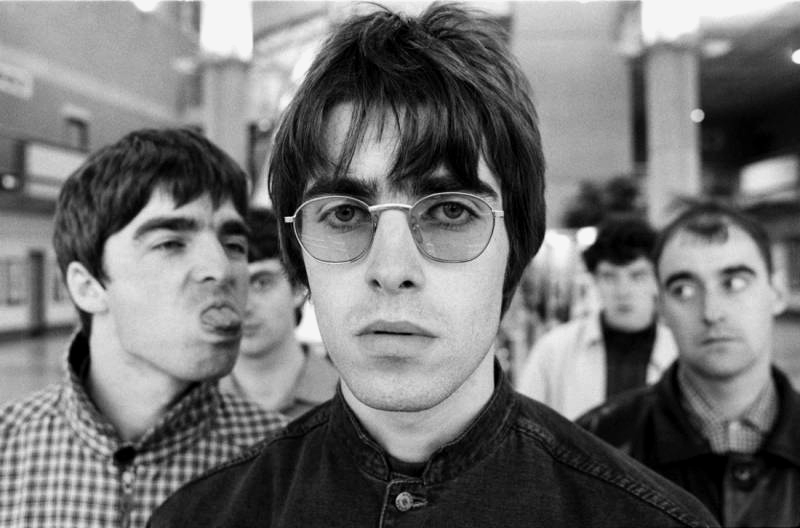
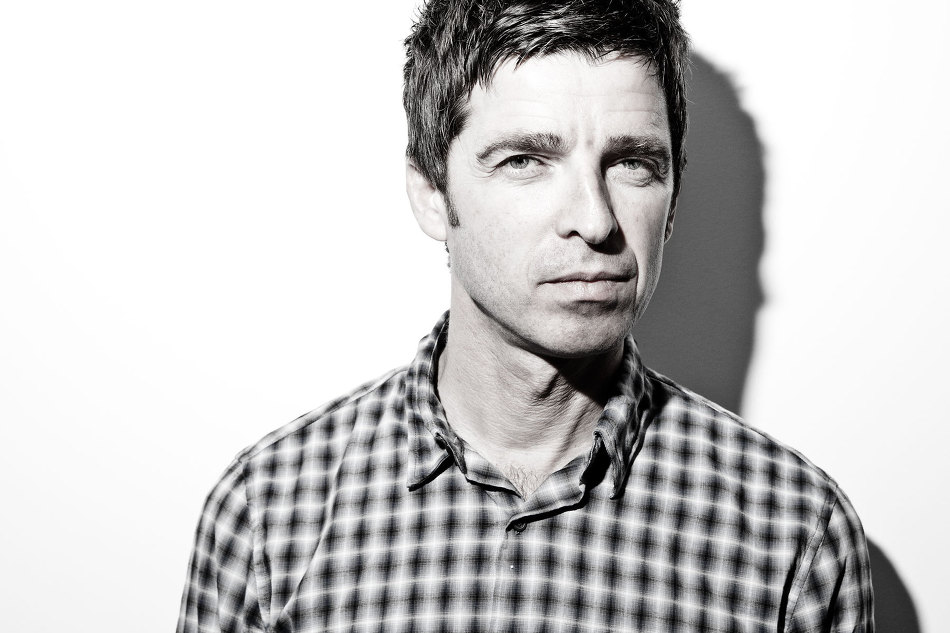
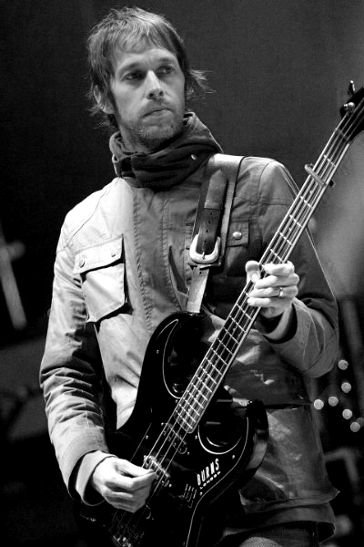
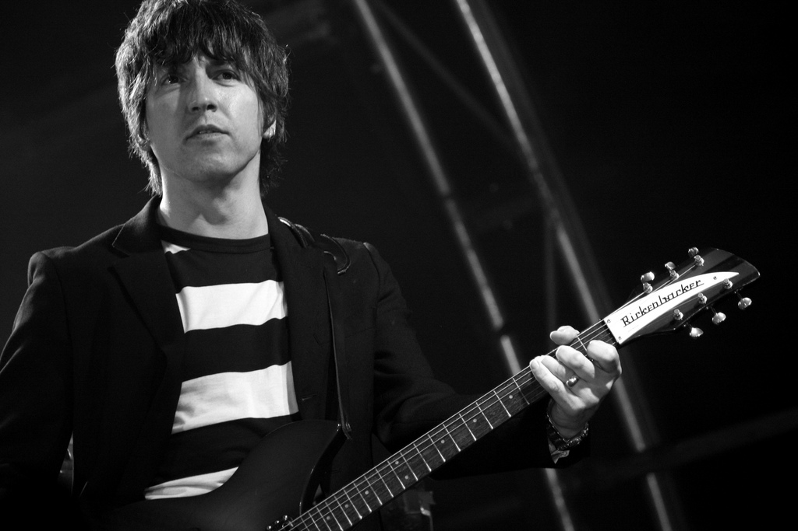

WHO'S OASIS?
오아시스는 1991년 영국 맨체스터에서 결성된 록밴드로서, 앤디 벨, 리암 갤러거, 노엘 갤러거, 겜 아처의 멤버로 활동하다(해체 당시 기준) 2009년 공식 해체 되었다. 90년대를 대표하는 잉글랜드 맨체스터 출신의 얼터너티브 록 또는 브릿팝 밴드이며, 90년대에 가장 중요한 밴드를 언급할때 너바나, 라디오헤드 등등과 함께 빠지지 않는편이다. 기타리스트 겸 작곡가인 노엘 갤러거와 싱어이자 프론트맨인 리암 갤러거 형제가를 주축으로 활동하였고, 90년대에 비틀즈의 영향을 강하게 받은 앨범들로 역대급 성공을 거두었다. 섹스 피스톨즈, 더 스미스, 스톤 로지스 등의 음악에서도 큰 영향을 받았으며, 90년대 밴드 음악에 매우 큰 영향을 끼쳤다. 블러, 펄프, 스웨이드 등과 함께 브릿팝의 전성기를 이끌었던 밴드이다.
Member
※ 2009년 해체 당시 기준.리암 갤러거(메인 보컬)
William John Paul "Liam" Gallagher
1972년 9월 21일 출생이다. 오아시스의 프론트맨이지만 싸움꾼 이미지가 강한데, 사실 그럴 수밖에 없는 것이, 노엘은 가끔 인터뷰나 쇼 프로에서 독설을 퍼붓거나 비꼬는 것뿐이지만, 리암은 직접 행동으로 표현하는 경우가 많기 때문이다. 갖가지 기행들을 하였다. 하지만 영국에서 가장 개성있는 목소리를 갖고 있는 사람 중 한명이며, 작곡 천재인 형(노엘 갤러거)에게 묻히지만 좋은 노래도 쓸 줄 아는 재능있는 뮤지션이다. 오아시스를 국민적 스타로 만든 데에는 노엘의 작곡실력이 가장 큰 역할을 했지만 만일 리암의 보컬이 없었다면 힘들었을 것이라는게 중론.
노엘 갤러거(기타, 보컬)
“Noel“ Thomas David Gallagher
1967년 5월 29일 출생이다. 지금은 해체된 영국의 로큰롤 밴드 오아시스의 (사실상)리더이자, 메인 송라이터이자 기타리스트이다. 팬들은 여전히 그를 The Chief(대장)이라고 부른다. 오아시스 탈퇴 후, 'Noel Gallagher’s High Flying Birds'라는 독자적인 백밴드를 결성하고 성공적인 음악 활동을 이어가고 있다. 오아시스의 거의 모든 히트곡은 그가 작곡했다. 그의 창작력이 절정을 치달았던 90년대 당시엔 정규 앨범뿐만이 아니라 싱글의 B-side 곡들까지 좋은 평가를 받았다. 기타, 베이스, 드럼 등 다양한 악기를 다룰 수 있으며, 인스파이럴 카페츠의 로디로 활동할 때엔 스탭 명단에 드럼 테크니션으로도 기록되어 있었다. 그래서 7집 Dig Out Your Soul에서는 본인이 드럼을 친 곡도 꽤 있다.(Bag It Up, Waiting For The Rapture, Soldier On). 그 역시도 리암과 같이 오아시스 활동시절 많은 기행을 저질렀지만(노엘은 독설 위주였다), 위와같은 뛰어난 재능으로 많은 브릿팝 밴드에 영향을 주었다.
앤디 벨(베이스)
Andrew Piran 'Andy' Bell
2000년대에 접어들어, 초기 멤버였던 본헤드와 귁시가 탈퇴하고 베이시스트로 밴드에 가입하게 된다. 그가 오디션을 볼 당시 오아시스는 이미 제2 기타리스트로 겜 아처가 가입한 상태였기 때문에 오아시스에서 처음으로 베이스 기타를 잡기로 결정한다., 6집 Don't Believe the Truth에서는 첫 번째 트랙으로 앤디가 작곡한 곡인 Turn Up The Sun이 선택받기도 하고, 앤디가 작곡한 다른 여러 트랙들도 호평을 받는 등 다시 작곡 능력이 빛을 발하게 되어, 7집에 이르기까지 점차 대중들에게 '오아시스 멤버'로서 앤디 벨의 존재감을 알리게 된다. 영국 90년대 기타 팝 역사에서 가장 중요한 기타리스트이자 작사가, 작곡가로서 브릿팝 4대 기타리스트 중 하나로 꼽히는 실력있는 뮤지션이다.
겜 아처(기타)
Colin Murray "Gem" Archer
오아시스의 리듬 기타리스트이다. 라이브 공연에서 노엘과 겜은 자주 파트를 바꿔가며 연주했는데, 노엘과 리암 모두 그의 기여를 높게 평가하였다. 겜은 송라이터로서도 활동했는데, 오아시스에 합류하고 나서 5집 앨범 수록곡인 "Hung In A Bad Place"를 내기도 했다. 그의 역할은 6집 앨범부터 확장되기 시작했는데, 6집 앨범에 겜의 곡인 "A Bell Will Ring"과 리암과 공동으로 작곡한 "Love Like A Bomb"이 수록됐고, "The Meaning Of Soul"에서는 백 보컬을 한다. B-Side 트랙도 작곡을 했는데, 수록된 곡으로는 "Eyeball Tickler"와 "The Quiet Ones"가 있다. 그는 7집 앨범인 "Dig Out Your Soul"의 수록곡인 "To Be Where There's Life"도 작곡했다. 노엘의 탈퇴로 오아시스는 해체되었지만 아직까지 노엘과 연락을 하며, 라이브 콘서트 등을 진행하기도 한다.
History
1991년
영국 잉글랜드 맨체스터에서 리엄 갤러거, 폴 본헤드, 아서, 폴 맥기건, 토니 맥캐롤이 ‘레인(The Rain)’이라는 이름으로 밴드를 결성했다. 그해 '오아시스(Oasis)'로 팀 이름을 바꿨고, 리엄 갤러거의 형이자 영국 록 그룹 인스파이럴 카펫츠의 매니저이자 기타 테크니션이었던 노엘 갤러거를 영입했다.
1993년
크리에이션 레코즈와 음반계약을 체결했고, 1994년 데뷔앨범 《데피너틀리 메이비》(1994년 영국 앨범차트 1위)를 발표했다. 《데피너틀리 메이비》에서 <슈퍼소닉(Supersonic)>(1994년 영국 싱글차트 31위), <셰이커메이커(Shakermaker)>(1994년 영국 싱글차트 11위), <리브 포에버(Live Forever)>(1994년 영국 싱글차트 10위), <시가레츠 앤드 알코올(Cigarettes & Alcohol)>(1994년 영국 싱글차트 7위) 등을 히트시켰다.
1994년
9월 미국 로스앤젤레스 공연 도중 리엄 갤러거가 관중들에게 무례한 언동을 하고 노엘 갤러거를 탬버린으로 때리는 사고가 발생했다. 공연이 끝난 후 노엘 갤러거가 팀을 탈퇴했지만 그해 10월 리엄 갤러거와 화해하면서 다시 팀에 복귀했다. 이후에도 노엘 갤러거와 리엄 갤러거는 잦은 다툼을 벌이며 그룹 활동에 지장을 초래했다.
1995년
그룹은 드러머를 앨런 화이트(Alan White)로 교체하고 두 번째 앨범 《(왓츠 더 스토리) 모닝 글로리?》(1995년 영국 앨범차트 1위)를 출시했으며, <섬 마이트 세이(Some Might Say)>(1995년 영국 싱글차트 1위), <원더월(Wonderwall)>(1995년 영국 싱글차트 2위), <롤 위드 잇(Roll With It)>(1995년 영국 싱글차트 2위), <돈트 룩 백 인 앵거(Don't Look Back In Anger)>(1996년 영국 싱글차트 1위), <샴페인 슈퍼노바(Champagne Supernova)>(1996년 미국 빌보드 모던록차트 1위) 등의 노래를 히트시키며 블러와 함께 브릿팝을 대표하는 그룹으로 명성을 얻었다. 《(왓츠 더 스토리) 모닝 글로리?》로 1996년에 열린 제16회 브릿 어워드에서 ‘최우수 영국 앨범(Best British Album)’을 포함한 3개 부문을 수상했다.
1999년
폴 ‘본헤드’ 아서와 폴 맥기건의 잇단 탈퇴 후, 겜 아처(Gem Archer. 기타, 키보드)와 앤디 벨(Andy Bell. 베이스, 키보드)을 영입했다. 또한 그해 크리에이션 레코즈가 폐업하면서 음반사 빅 브라더(Big Brotyher)를 직접 설립했다. 2004년 앨런 화이트의 탈퇴 후, 링고 스타(Ringo Starr)의 아들이자 드러머인 잭 스타키(Zak Starkey)를 비공식 멤버로 영입했다. 2007년에 열린 제27회 브릿 어워드에서 ‘공로상’을 수상했다.
2008년
일곱 번째이자 마지막 스튜디오 앨범 《딕 아웃 유어 소울》을 발표했고, <더 쇼크 오브 더 라이트닝(The Shock Of The Lightning)>(2008년 영국 싱글차트 3위), <아임 아우터 타임(I'm Outta Time)>(2008년 영국 싱글차트 12위), <폴링 다운(Falling Down)>(2009년 영국 싱글차트 10위) 등의 대표곡을 남겼다.
2009년
8월 노엘 갤러거가 리엄 갤러거와 불화를 일으키며 탈퇴를 선언했고, 그해 10월 그룹은 공식 해체되었다. 2009년 말 리엄 갤러거, 겜 아처, 앤디 벨은 록 그룹 비디 아이(Beady Eye)를 결성했고, 2011년 노엘 갤러거는 솔로 프로젝트 그룹 노엘 갤러거스 하이 플라잉 버즈(Noel Gallagher's High Flying Birds)를 결성했다.
오아시스는 비틀스의 영향을 받은 록 음악을 구현하며 1990년대 브릿팝을 대표하는 그룹으로 평가를 받고 있다. 대표앨범으로 《데피너틀리 메이비》, 《(왓츠 더 스토리) 모닝 글로리?》, 《딕 아웃 유어 소울》 등이 있으며, <리브 포에버>, <섬 마이트 세이>, <돈트 룩 백 인 앵거>, <스탠드 바이 미(Stand By Me)>(1997년 영국 싱글차트 2위), <더 쇼크 오브 더 라이트닝> 등이 대표곡으로 꼽힌다.